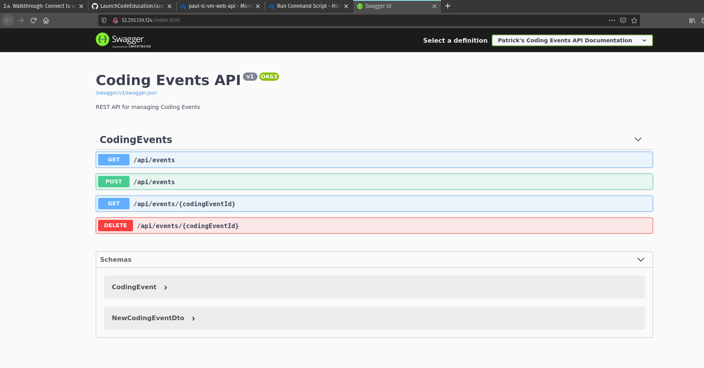

CodingEventsAPI¶For our studio today we will be deploying a RESTful API.
In our walkthrough we deployed a minimal, .NET MVC app. MVC is a design pattern in which the front end and back end are contained within the same code base. MVC has it’s pros and cons, but for the remainder of our Operations trainings we will be deploying RESTful APIs.
RESTful APIs are pure back-end applications; they don’t come with a front end. This typically means the RESTful API is deployed on it’s own infrastructure and then can be consumed by any number of front ends that are hosted on their own infrastructure. This separation has pros and cons. It means that you may have more infrastructure and ops work to manage. However, an advantage is that both projects live in isolation and can be developed independently of one another.
We won’t be developing the RESTful API from scratch since we are focusing on the operations work, but you should look over the repo of the coding-events-api.
Starting out, we will need to create a new resource group for this project. If you need a refresher refer to the previous walkthrough for how to do this.
The only change will be using the following pattern (your-name-lc-rg-rest-api) when naming your resource group.
Just like the walkthrough you will need create an ubuntu VM.
Make sure your machine matches the following requirements:
your-name-lc-rg-rest-apiyour-name-lc-vm-rest-apiLaunchCode-@zure1LaunchCode-@zure1After your VM spins up you will need to add the .NET SDK and dotnet CLI tool. Checkout the walkthrough for a reminder on how we did this using the VM Run Command.
The source code for our project is stored on GitHub, so we also need git. Conveniently, git comes pre-installed on Ubuntu.
You can check that git is installed and available to you by running git --version in the VM Run Command window. After running this command, you should see a git version output like the image below.
If git isn’t installed, simply delete this VM and create a new one making sure you selected the correct image.
Our VM is essentially identical to the VM we used in the walkthrough. It has the same hardware, operating system, and tools.
However, we are going to be using git to deliver, or get our source code, to the machine. We still want our source code in the same base path, the /home/student directory.
For our Run Command we will need to change to the /home/student directory, and then clone the Git repository that contains our source code, https://github.com/LaunchCodeEducation/coding-events-api. We will also need to switch to the 1-sqlite branch for today’s deployment.
We can check that it delivered the source code properly by running ls in the coding-events-api directory that is created after cloning the repo.
cd /home/student
git clone https://github.com/LaunchCodeEducation/coding-events-api
cd /home/student/coding-events-api
git checkout 1-sqlite
ls /home/student/coding-events-api
Looking into the directory, we can see we have some source code. We don’t see a .csproj file though, and that must be present to publish our application. However, we see a nested project directory, /home/student/coding-events-api/CodingEventsAPI, which should contain the .csproj file.
ls /home/student/coding-events-api/CodingEventsAPI
In this nested project directory we can see the CodingEventsAPI.csproj file, so we will be able to publish this project to create our build artifacts.
In order to publish your project you will follow similar steps as the those in the previous walkthrough with one exception. Because the .csproj file is in a nested directory you will need to move to that directory before publishing.
Similar to the walkthrough, you will need to create inbound and outbound rules for port 80 to allow traffic over the public internet.
After getting your NSG set up you can run the executable artifact that was published.
You may have to look around for it—it’s probably somewhere in the /bin subdirectories. Don’t forget ls and cd are your friends for finding and reaching files or directories.
Don’t forget to run your executable with the environment variable we set in the walkthrough ASPNETCORE_URLS="http://*:80". If you are hazy on how to execute the artifact using this variable, refer to the previous walkthrough.
Finally, after you have run these steps navigate to your VM’s public IP address in your browser and you should see the Swagger Page to let you know your API has been successfully deployed.
We manually deployed our application using the Azure Run Command console in the browser. While this was likely a time-consuming process for you, know that the techniques we will learn in future classes are much more intuitive and efficient. It is important to understand the discrete steps involved so that you understand what is going on behind the scenes when using tools that abstract these processes.